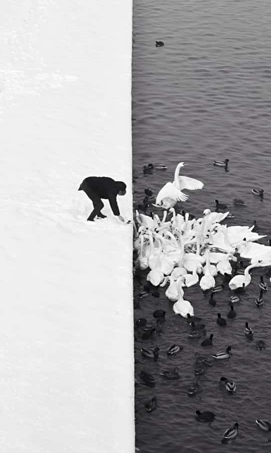
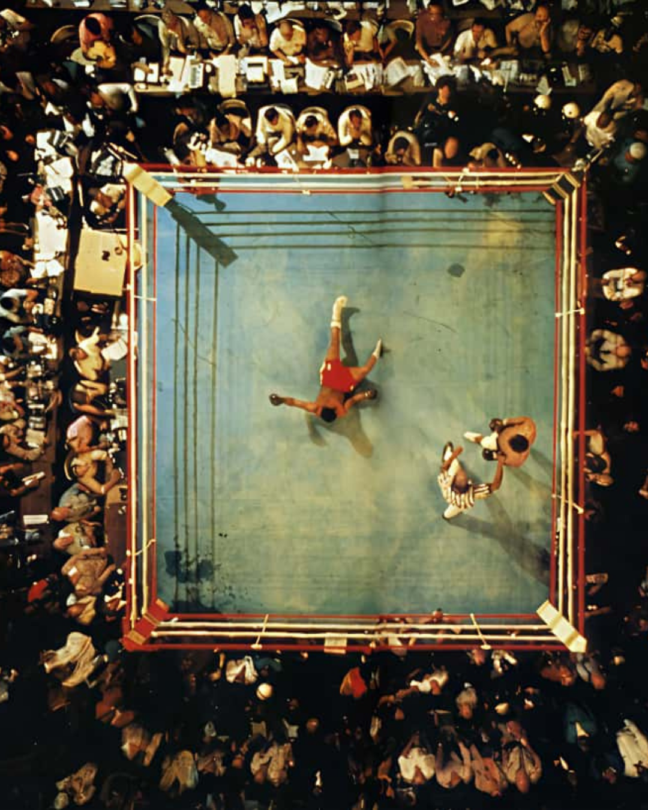
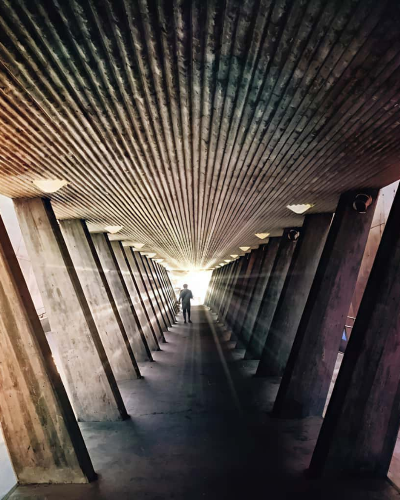
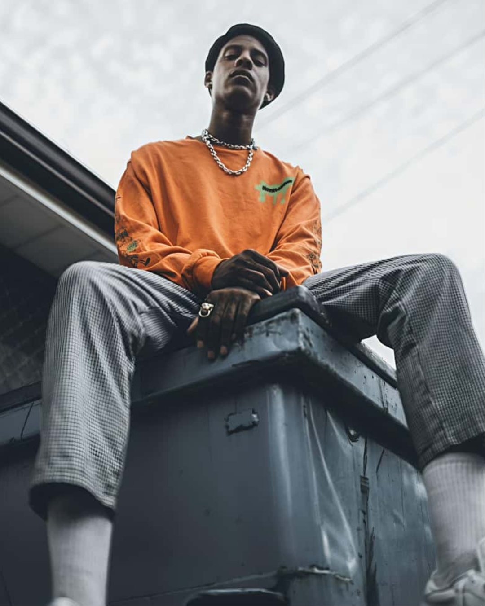

Offline Website Software
画面左右或上下呈现对称的平衡结构, 给人稳定, 整齐和庄重的感觉。
常用于建筑, 人物正面照或静物作品中。
A balanced structure where both sides of the image
(left and right or top and bottom) mirror each other.
It creates a sense of stability, order, and harmony —
often used in architecture, portraits, or still-life works.

从高处俯视拍摄或绘制，让观者从“上帝视角”看画面。
能展示空间布局、整体结构或制造视觉新鲜感。
A view taken from above, showing the
scene from a “god’s-eye” perspective.
It reveals spatial layout, overall structure
and gives a unique visual experience.

利用线条（如道路、栏杆、光线方向等）引导观众的视线进入画面焦点。
能强化画面的深度感与视觉方向。
Uses lines (such as roads, fences, or light directions)
to guide the viewer’s eyes toward the main subject.
This technique enhances depth, focus, and visual flow in the image.

从下往上观看主体，使其显得高大, 有力量或庄严。
常用于表现人物自信, 建筑雄伟或物体的存在感。
Captured from below, looking up at the subject.
It makes the subject appear taller, stronger, or more
powerful, often used to convey confidence or grandeur.
Offline Website Software